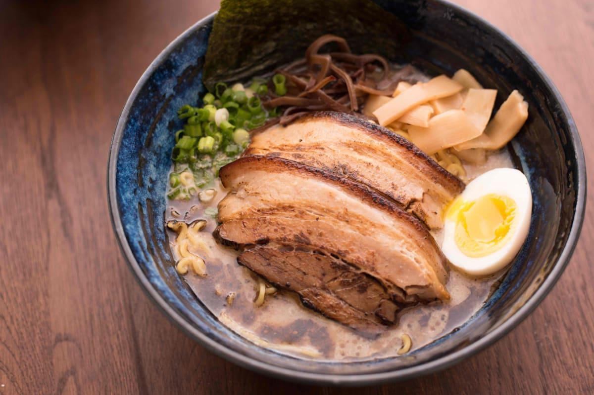
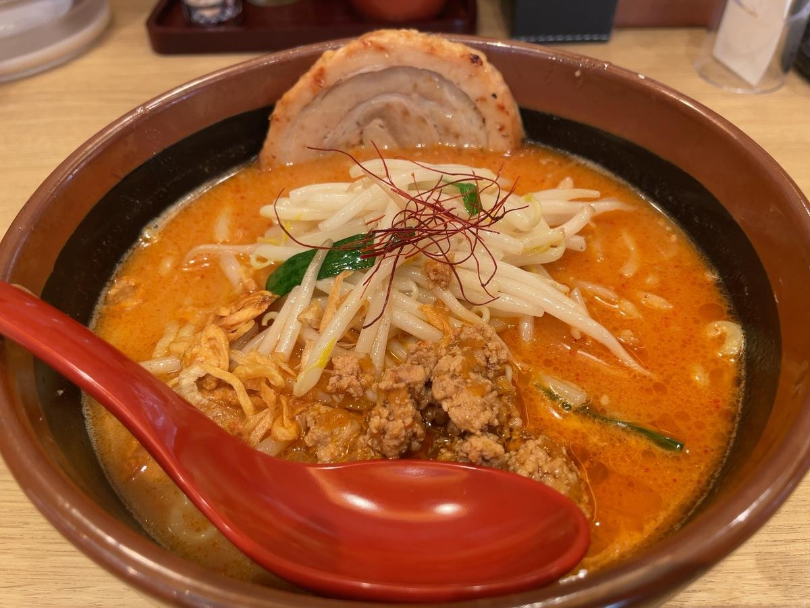
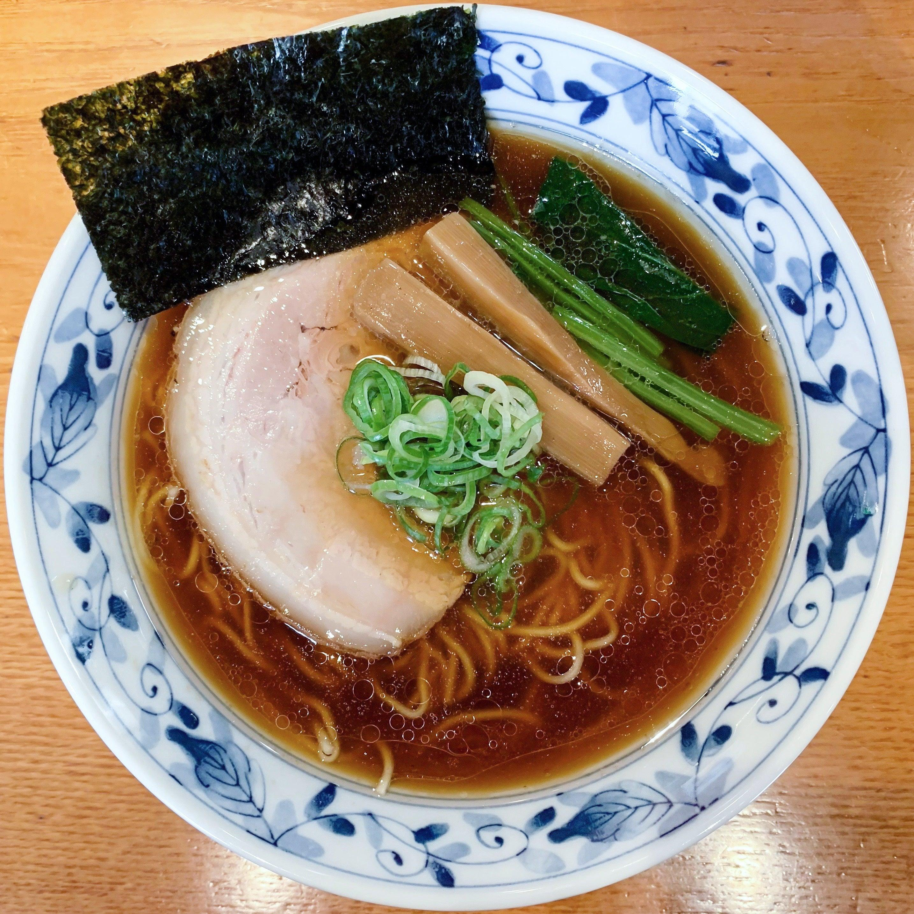
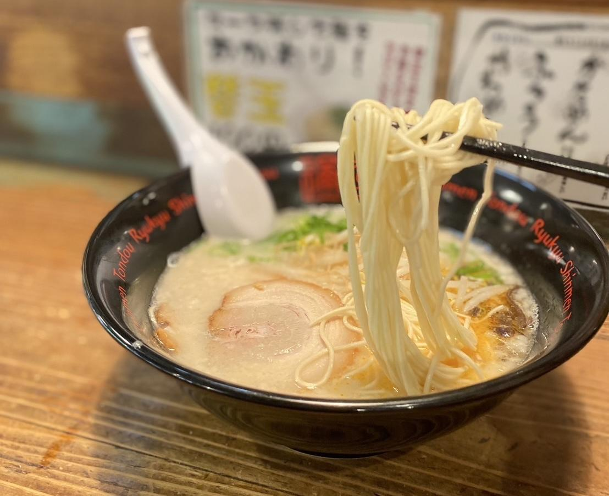
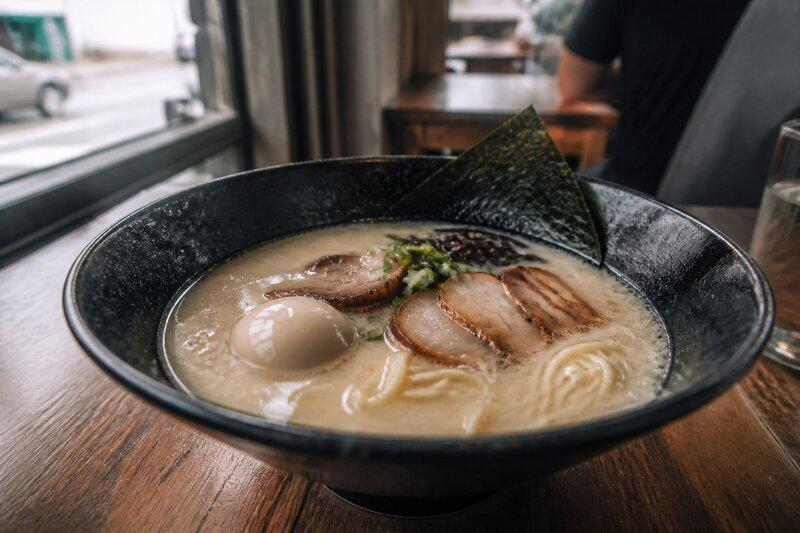
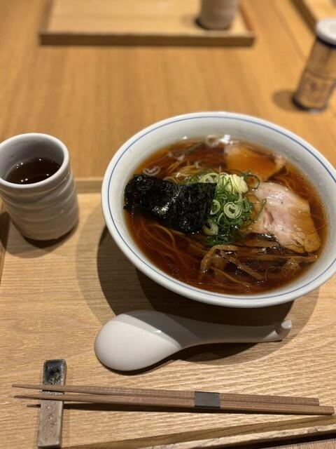
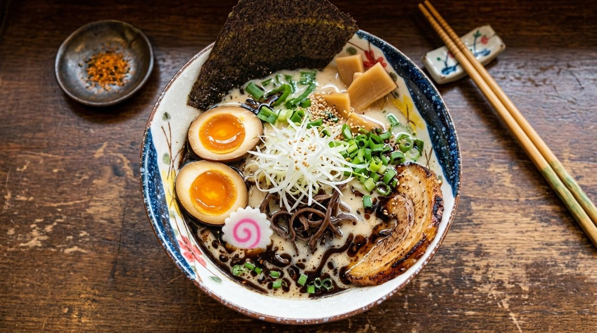
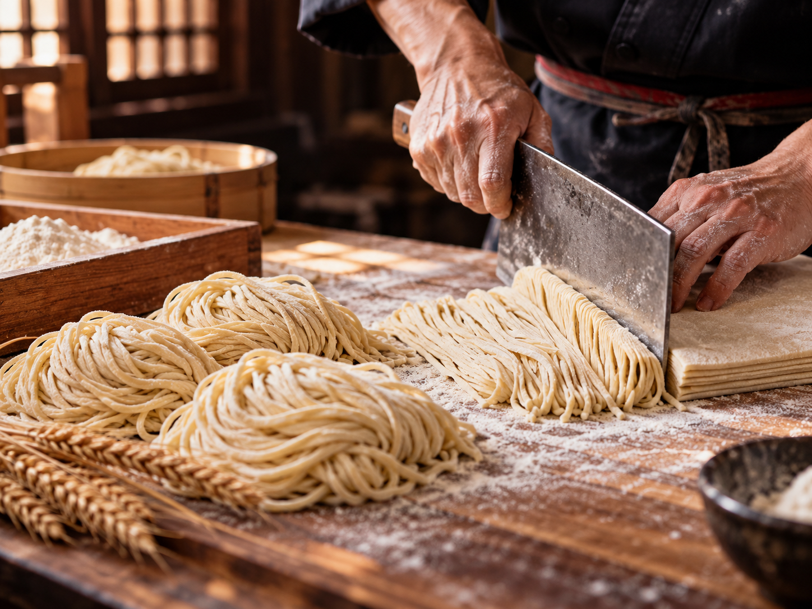
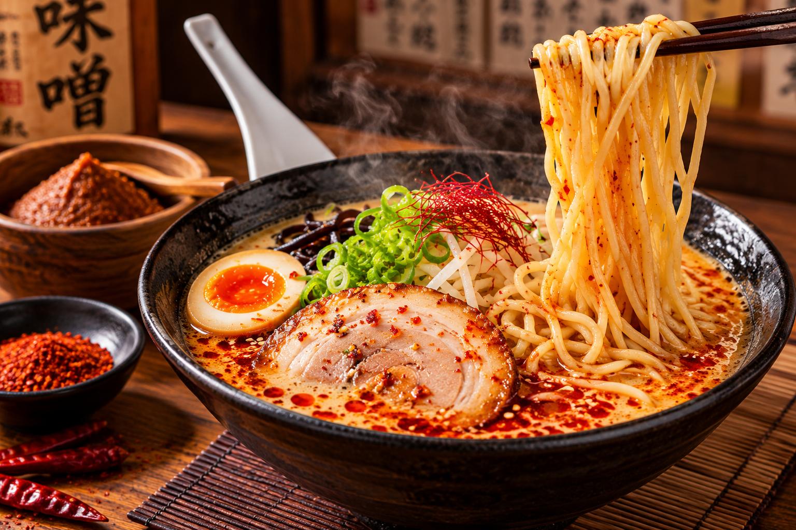

01Signature RamenBroth,
noodles & toppings
02Noodles & Special
DishesSmall plates and seasonal bowls
03Restaurant AmbienceCounter
seats and warm details
04Behind the KitchenPeople,
craft and preparation

Kitchen Craft
Master Chef At The Stockpots
Precise chopstick garnishing at service

Signature Bowl
Shiromaru Tokusei Classic
18-hour collagen rich broth with seasoned ajitama

Izakaya Small Plates
Pan-Seared Gyoza & Karaage
Lace-crusted dumplings and double-fried chicken

Pairings
Niigata Sake & Smoked Highball
Curated spirits on dark cedar counter

Ambiance
Downtown Flagship Dining Hall
Warm cedar woodwork and paper lanterns

Ambiance
The 14-Seat Cedar Counter
Direct open kitchen view

Signature Bowl
Black Garlic Mayu Tonkotsu
Charred roasted garlic oil and torched chashu

Kitchen Craft
Hand-Cut Hokkaido Wheat
Morning noodle maturation and folding

Signature Bowl
Spicy Red Miso Firebowl
Fermented toasted soybean paste with Sichuan heat